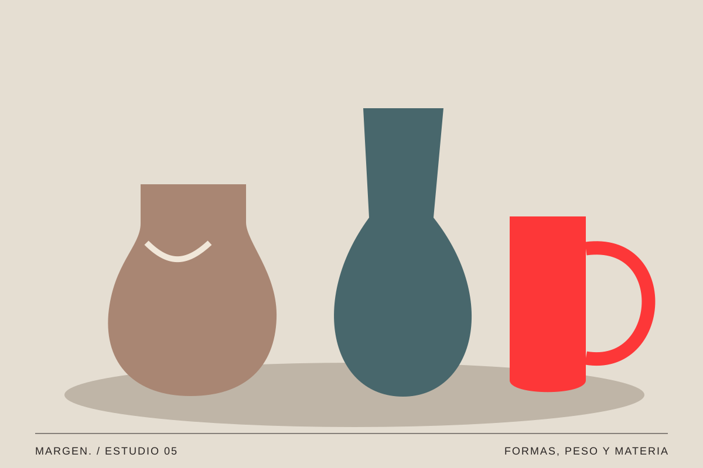
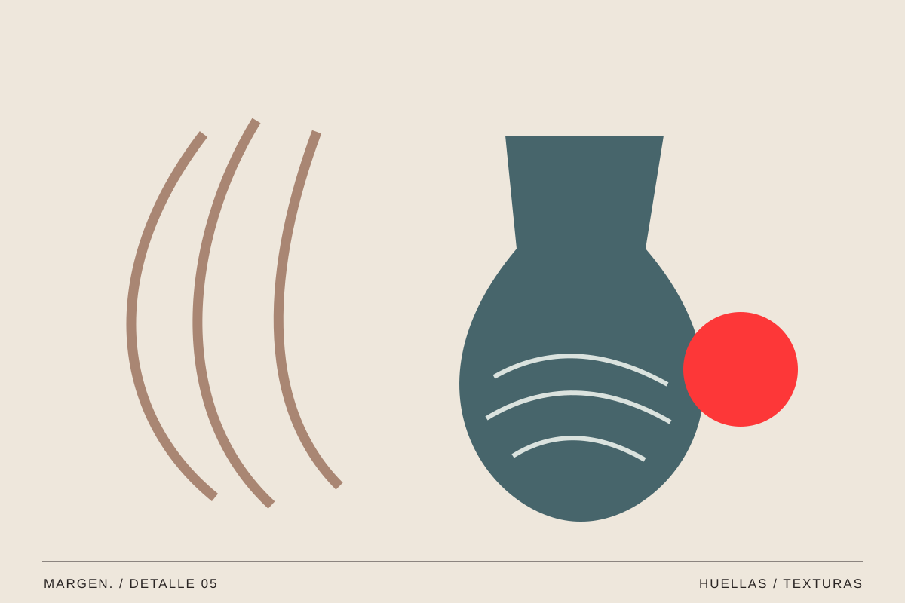

05 / Arte / Vol. 001
Objetos que cuentan historias
Mirar lo cotidiano de otra forma.
MARGEN. / Texto editorial ·

Una taza, un jarrón o un cuaderno pueden parecer objetos pequeños. Sin embargo, sus materiales y sus marcas de uso nos ofrecen muchas pistas sobre la relación que tenemos con ellos.
Forma y gesto
El asa de una taza propone una manera de cogerla. El peso de una pieza cambia cómo la sostenemos. La textura invita a tocar o a mantener cierta distancia. Mirar un objeto implica atender tanto a su aspecto como a los gestos que hace posibles.
En una composición de objetos, esas diferencias se vuelven más visibles. Una superficie mate junto a otra brillante, una forma alta junto a otra baja: las relaciones permiten apreciar detalles que podrían pasar desapercibidos por separado.
La elección de un material determina mucho más que una apariencia. Una taza de cerámica puede conservar el calor y transmitir una sensación de peso; una pieza de vidrio deja pasar la luz y modifica lo que vemos a través de ella. Incluso antes de utilizar un objeto, imaginamos cómo se sentirá en la mano. El diseño conecta esas expectativas con decisiones concretas sobre tamaño, textura, equilibrio y facilidad de uso.

Lo cotidiano también merece un primer plano.
Lo que permanece
Con el tiempo aparecen señales que no estaban en el objeto nuevo. Una esquina doblada, una zona desgastada o una reparación hablan de uso y cuidado. No siempre restan valor a la pieza; a veces explican por qué alguien decide conservarla.
No podemos conocer una historia personal solo por observar una fotografía. Pero sí podemos preguntarnos qué detalles despiertan recuerdos y por qué ciertos materiales nos resultan familiares. Esa diferencia entre lo que vemos y lo que imaginamos también merece atención.
Las señales de uso transforman también nuestra idea de lo perfecto. Un cuaderno nuevo tiene las páginas lisas; uno que nos ha acompañado durante meses acumula anotaciones, esquinas dobladas y papeles sueltos. No todos esos rastros deben celebrarse ni conservarse, pero sí pueden hablarnos de hábitos y de afectos. Fotografiar un detalle, en vez de mostrar el objeto entero, ayuda a observar esa relación entre materia y tiempo.

Un pequeño archivo
Escoge tres objetos de tu mesa y colócalos juntos. Prueba a cambiar la distancia entre ellos, el fondo o la dirección de la luz. El ejercicio no necesita una gran producción: consiste en descubrir cómo una decisión de composición modifica la lectura.
Fotografiarlos puede ser una forma de registrar ese momento. Quizá al repetirlo meses después hayas cambiado de objetos, o quizá descubras que algunos siguen acompañándote.
Para crear un pequeño archivo visual, conviene repetir algunas condiciones: un fondo sencillo, una luz parecida y un encuadre coherente. De ese modo, las diferencias entre las piezas se hacen más visibles. También podemos combinar vistas generales con acercamientos a una grieta, un relieve o una unión. Lo interesante es pensar cada fotografía como una decisión editorial, no como una imagen aislada que solo pretende verse bonita.
Lo valioso no siempre es extraordinario
El diseño suele presentarse a través de objetos nuevos, impecables y perfectamente iluminados. Mirar los que ya utilizamos introduce otra perspectiva: la de las cosas que han encontrado un lugar en nuestra rutina. Algunas pasan inadvertidas precisamente porque funcionan tan bien que dejamos de pensar en ellas.
La próxima vez que elijas un objeto para fotografiar, intenta contar también qué relación tiene con el espacio y con las personas que lo utilizan. Ahí puede empezar una historia mucho más interesante que una simple descripción de su forma.